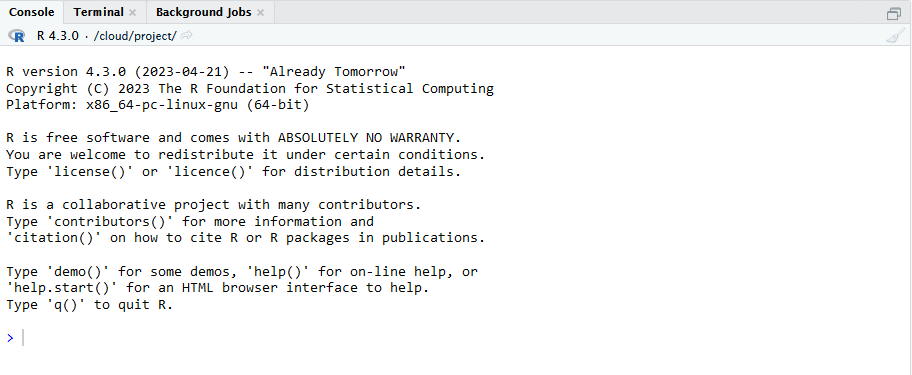

R und RStudio Installation

1. R Installation
allgemein unter: https://cran.rstudio.com/
für Windows: https://cran.rstudio.org/bin/windows/base/
für macOS: https://cran.r-project.org/bin/macosx/

2. RStudio Installation
RStudio Einstieg
Kapitel
Console
Environment
Files
R
Skripte
RStudio ist eine sogenannte integrated development environment (IDE), also eine Entwicklungsumgebung für die Programmiersprache R. Grundsätzlich sind auch andere IDEs möglich, wir werden in diesem Tutorial jedoch immer davon ausgehen, dass RStudio verwendet wird.
Nach dem RStudio geöffnet wird, sieht es so aus:

Aktuell haben wir noch kein Dokument geöffnet. Wir sehen aktuell 3 separierte Bereiche bzw. Fenster.
Console

In der Console können R Befehle direkt ausgeführt werden. Dies ist praktisch für kleine Taschenrechner Befehle oder kleine Tests. Der Nachteil ist jedoch, dass die R Befehle nicht gespeichert werden können. Dafür wird ein R Skript benötigt.

Environment

Das Environment ist zu Beginn einer R Session leer. Wenn wir jedoch Variablen speichern oder Datensätze einladen, werden diese Objekte hier angezeigt.


R Skript
Kommentare
Grundsätzlich wird jeder Befehl und jedes Zeichen als R Code
verstanden. Wenn man einen Kommentar schreiben möchte, muss man in jeder
Zeile eine # davor setzen.

Code wird ausgeführt in dem der gewünschte Bereich markiert wird und dann auf den Run-Button geklickt wird. Es kann hier der gesamte Code markiert werden, aber auch einzelne Zeilen oder sogar nur einzelne Befehle.

Die Tastenkombination für Run ist unter Windows
Str + Enter und unter macOS Cmd + Enter.


RStudio vs otter
Die otter Tutorials sind alle interaktiv gestaltet.
Damit wir dir Feedback geben können und du nicht immer zwischen RStudio
und unserer Website wechseln musst, sind R-Bausteine eingebaut. Siehe
dir die folgenden Bilder und Aufgaben an, um zu verstehen wie in unseren
Tutorials R eingebaut ist.

Übungen
So sieht derselbe R Code in unserem Tutorial Format aus:
5*5
# Dies ist ein Kommentar
print("Hallo Welt!")Versuche Dich nun selbst!
Aufgabe Berechne 84 * 15. Gebe dazu die Berechnung in den R Code Bereich ein und klicke auf “Code ausführen”Datentypen
Kapitel
Kurze Zusammenfasssung
Logical
Integer
Double
Character
Viel Nichts in R
Infektiöse fehelende
Werte
Hilfreiche Funktionen
Kurze Zusammenfasssung
- Logical: TRUE, FALSE
- Integer: Ganze Zahlen (Platz speichernd)
- Double: Kommazahlen
- Character: Buchstaben
Logical
Werte: TRUE (entwpricht 1) und FALSE
(entspricht 0)
Kann aufsummiert werden:
TRUE + TRUE
FALSE + FALSE
TRUE + FALSE [1] 2
[1] 0
[1] 1Logische Operatoren können angewandt werden
FALSE & TRUE
FALSE | TRUE
5 < 10[1] FALSE
[1] TRUE
[1] TRUELogische Operatoren
| Symbol | Bedeutung |
|---|---|
< |
kleiner als |
> |
größer als |
== |
gleich |
!= |
ungleich |
| |
oder |
& |
und |
! |
Negierung |
Mit Logischen Operatoren können auf Objekte (Variablen, Vektoren,
Datensätze, …) angewandt werden. Als Ergebnis wird immer der Datentyp
logical ausgegeben.
buchstaben <- c("A", "B", "C", "D", "C")
zahlen <- c(18, 22, 16, 20)
# Welche Buchstaben sind C?
buchstaben == "C"
# Welche Zahl ist größer als 20?
zahlen > 20[1] FALSE FALSE TRUE FALSE TRUE
[1] FALSE TRUE FALSE FALSEÜbungen
Vorbereitung
namen <- c("Lisa Müller", "Peter Bauer", "Hannah Schmidt")
angemeldet <- c(TRUE, FALSE, TRUE)
alter <- c(18, 22, 16)Aufgabe: Beantworte die gestellte Frage mit R Code.
# Wer von den Personen heißt NICHT Lisa Müller?namen ___ "Lisa Müller"!=# Wer von den Personen heißt NICHT Lisa Müller?
namen != "Lisa Müller"# Wer von den Personen ist jünger als 18 Jahre?# Wer von den Personen heißt NICHT Lisa Müller?
alter < 18Integer
integer-zahlen sind Ganzezahlen in R. Sie sind
platzsparender als double Zahlen, da Kommas ausgeschlossen
sind. R geht zuerst immer davon aus, dass es sich um double
Zahlen handelt, somit müssen integer-Zahlen explizit
definiert werden.
Hier gibt es zwei Möglichkeiten:
- L muss direkt dahinter gesetzt werden, z.B.
2L :ermöglich schnell eine Folge anintegerZahlen zu generieren, z.B.1:3erzeugt die Zahlen von 1 bis 3 in einzer Schritten
1L
1:10
10:1[1] 1
[1] 1 2 3 4 5 6 7 8 9 10
[1] 10 9 8 7 6 5 4 3 2 1Mit der Funktion is.integer() können wir prüfen, ob es
sich um integer-Zahlen handelt oder nicht.
is.integer(1)
is.integer(1L)[1] FALSE
[1] TRUEDouble
double-zahlen sind sogenannte Gleitkommazahlen. Diese
Zahlentypen werden für normale Berechnungen verwendet
- Kommazahlen
- Sonderfälle
InfPositive Unendlichkeit-InfNegative UnendlichkeitNaNNot a Number (Fehlender Wert im Datensatz)
8/5
4.44 + 2.1[1] 1.6
[1] 6.54Mit der Funktion typeof() können wir abfragen, um
welchen Datentyp es sich handelt.
typeof(5)[1] "double"Character
Text oder Symbole oder auch Farben, werden in Datentyp
character gespeichert.
Text muss in "" gesetzt werden.
"Hallo Welt"[1] "Hallo Welt"shiny::icon("rocket")
shiny::icon("star")Oder auch für Hexcode, um Farben zu definieren.
scales::show_col(c("#044a85", "#e28743", "#1F98B44D", "#1F98BC"))Viel Nichts in R
In R gibt es viele Möglichkeit, um auszudrücken, dass etwas nicht vorhanden ist. Alle Formen von “Nichts” haben eine leicht andere Bedeutung und werden in unterschiedlichen Fällen verwendet oder produziert.
Hier eine (nicht vollständige) Übersicht:
NaN: Not a Number (Länge ist 1). Wir verwendet bei invaliden Rechenoperationen.NA: Not Available (Länge ist 1). Wird klassisch für fehlende Werte verwendet.NULL: Repräsentiert das Null-Objekt in R (Länge ist Null). Wird z.B. in Funktionen verwendet für default Argumente.logical(0): Einlogical-Wert der Länge Null.integer(0): Eineinteger-Zahl der Länge Null.double(0): Einedouble-Zahl der Länge Null.
All diese Werte stellen „nichts” oder „fehlend” dar.
Die Länge dieser Werte unterscheidet sich, so sind manche 0 und andere 1.
length(NaN)
length(NA)
length(NULL)
length(integer(0))
length(double(0))[1] 1
[1] 1
[1] 0
[1] 0
[1] 0NA
NA == "test"
NA == 5
NaN == 5[1] NA
[1] NA
[1] NANaN
0/0
Inf/1[1] NaN
[1] Inflogical(0)
NULL == "test"
NULL == 5
integer(0) == 5logical(0)
logical(0)
logical(0)Infektiöse fehlende Werte
Fehlende Werte wie NaN sind manchmal infektiös!
Bei Rechenoperationen führt z.B. ein NaN dazu, das das
Ergebnis auch ein fehlender Wert ist.
Dies gilt jedoch nicht für | Operationen.
NaN kann NICHT mit == geprüft werden! Es
muss mit is.na() geprüft werden.
NaN == NaN
NaN < 5
10 * NaN
NaN & TRUE
NaN | TRUE
is.na(NaN)[1] NA
[1] NA
[1] NaN
[1] NA
[1] TRUE
[1] TRUEHilfreiche Funktionen
Erstellen Dummy Variablen eines bestimmten Datentyps:
integer(5)
double(5)
character(5)
logical(5)[1] 0 0 0 0 0
[1] 0 0 0 0 0
[1] "" "" "" "" ""
[1] FALSE FALSE FALSE FALSE FALSEPrüfungen, welcher Datentyp vorliegt:
# Erzeugung einer Variable
number = 5
# Prüfung der Variable
is.integer(number)
is.double(number)
is.character(number)
is.logical(number)
is.numeric(number)
# Prüfung von Spezialfällen
is.na(number)
is.finite(number)
is.infinite(number)[1] FALSE
[1] TRUE
[1] FALSE
[1] FALSE
[1] TRUE
[1] FALSE
[1] TRUE
[1] FALSEDatenstrukturen
Variablen
Variablen sind Kontainer für Daten. Sie zeigen auf ein Objekt im Speicher. Sie müssen ausgeführt werden, um erstellt und genutzt werden zu können. Nach Erstellung taucht die Variable im Environment auf.
Eine Variable kann verschiedene Inhalte enthalten, z.B eine Zahl, Buchstaben, Matrizen oder Listen.
Der Inhalt einer Variable kann auf die Konsole geschrieben werden, wenn der Variablenname ausgeführt wird.
name <- "Lara"
weiblich <- TRUE
lieblingszahl <- 3
alter <- NULL
name
weiblich
lieblingszahl[1] "Lara"
[1] TRUE
[1] 3In RStudio ist nach dem Ausführen dieses Codes im Environment folgendes zu sehen:

Variablen können mit Operatoren Inhalte zugewiesen werden. In R gibt
es hierfür zwei Zuweisungsoperatoren: <- und
=. Wobei es als guter Stil gilt einheitlich
<- zu verwenden.
pfeil_beispiel <- "Pfeil"
gleich_beispiel = "Gleich"
pfeil_beispiel
gleich_beispiel[1] "Pfeil"
[1] "Gleich"Der Inhalt von einer Variable kann jederzeit geändert werden. Neue Daten können mit dem Zuweisungsoperator zugewiesen werden. Dadurch werden die alten Daten überschrieben.
# Alte Daten
freunde <- 1:5
freunde
# Neue Daten Variante 1 (anderer Datentyp)
freunde <- c("Lisa", "Thorben", "Mara")
freunde
# Neue Daten Variante 2 (einzelne Daten ändern)
freunde[2] <- "XXXX"
freunde
# Neue Daten Variante 3 (einzelne Daten ändern)
freunde[c(FALSE, TRUE, TRUE)] <- ""
freunde[1] 1 2 3 4 5
[1] "Lisa" "Thorben" "Mara"
[1] "Lisa" "XXXX" "Mara"
[1] "Lisa" "" "" Atomare Vektoren
Atomare Vektoren können mehrere Informationen desselben Datentyps enthalten.
- Werden mit
c()erstellt (c = combine) - Skalare: Vektoren mit nur einer Position
- „klassische Vektoren”: Vektoren mit mehr als einer Position
- Zugriff erfolgt mit Klammern
[]und Nummer der Position oder einem Vektor mitTRUEundFALSEWerten.
[]
name = "Lara"
namen_freunde = c("Lisa", "Thorben", "Mara")
lieblingszahlen_freunde = c(1, 7, 8)
weiblich_freunde = c(TRUE, FALSE, TRUE)
# Zugriff erfolgt mit []
namen_freunde[2]
lieblingszahlen_freunde[2]
weiblich_freunde[c(2, 3)][1] "Thorben"
[1] 7
[1] FALSE TRUEBeispiel: Zugriff mit
TRUE und FALSE
namen_freunde = c("Lisa", "Thorben", "Mara")
namen_freunde[c(TRUE, TRUE, TRUE)]
namen_freunde[c(TRUE, FALSE, FALSE)][1] "Lisa" "Thorben" "Mara"
[1] "Lisa"Vektorisierte Berechnungen
Die Berechnungen in R erfolgen vektorisiert. Dies erlaubt effizienteres und leichteres Programmieren bei Rechenoperationen.
Beispiel: Multiplikation eines Vektors mit einem Skalar
# Jede Zahl im Vektor wird hier automatisch mit 5 multipliziert
c(1, 2, 3, 4) * 5[1] 5 10 15 20Beispiel: Addition zweier Vektoren
# Die Zahlen auf denselben Positionen werden mit einender addiert
zahlen_1 <- c(0, 0, 1, 1)
zahlen_2 <- c(1, 2, 3, 4)
zahlen_1 + zahlen_2[1] 1 2 4 5Beispiel: Logische Operatoren
# Alle Zahlen werden mit dem logischen Operator geprüft
zahlen <- c(0, 1, 2, 3)
zahlen < 2[1] TRUE TRUE FALSE FALSEFaktoren
Faktoren repräsentieren kategoriale Daten mit endlichen Ausprägungen, z.B. Tage, Monate im Jahr oder Geschlecht. Damit mit diesen Daten gut gerechnet werden kann in R, werden sie mit Faktoren abgebildet.
Dadurch können kategoriale Daten geordnet werden (hilfreich bei Tagen oder Monaten) oder auch in Zahlen kodierte Daten können inhaltlich sinnvoll abgebildet werden (hilfreich für statistische Auswertungen und Grafiken).
Beispiel: Geschlecht (Daten sind als Zahlen kodiert):
# Die Daten sind hier kodiert mit Zahlen
daten <- c(1,2,3,1,2,1,1,1,1)
# Erstellung eines Faktors
geschlecht <- factor(
daten,
# alle möglichen Kategorien (müssen nicht alle vorhanden sein in den Daten)
levels = c(1, 2, 3, 4),
# Namen zugeordnet zu den levels - > für was steht die Zahl 1?
labels = c("weiblich", "männlich", "divers", "unbekannt")
)
geschlecht[1] weiblich männlich divers weiblich männlich weiblich weiblich weiblich
[9] weiblich
Levels: weiblich männlich divers unbekanntBeispiel: Tage (Daten sind als Text kodiert):
# Die Daten sind hier kodiert als Text
daten <- c("Sonntag", "Montag", "Freitag")
# Erstellung eines Faktors
tage <- factor(
daten,
# alle möglichen Kategorien (müssen nicht alle vorhanden sein in den Daten)
levels = c("Montag", "Dienstag", "Mittwoch", "Donnerstag", "Freitag", "Samstag", "Sonntag")
)
# Daten ungeordnet
tage[1] Sonntag Montag Freitag
Levels: Montag Dienstag Mittwoch Donnerstag Freitag Samstag SonntagBeispiel: Faktor vs character Vektor
daten <- c("Sonntag", "Montag", "Freitag")
# Daten werden nach dem Alphabet geordnet
sort(daten)
tage <- factor(
daten,
levels = c("Montag", "Dienstag", "Mittwoch", "Donnerstag", "Freitag", "Samstag", "Sonntag")
)
# Daten werden nach der Reihenfolge der angegebenen levels geordnet
sort(tage)[1] "Freitag" "Montag" "Sonntag"
[1] Montag Freitag Sonntag
Levels: Montag Dienstag Mittwoch Donnerstag Freitag Samstag SonntagMatrizen
Sind Tabellen, die aus Vektoren gleicher Länge bestehen. - Können nur
einen Datentyp enthalten, z.B. numeric - R
Befehl: matrix() - Zugriff erfolgt mit [,]
wobei die Positionen für [Zeile,Spalte] stehen als erst
Zeile, dann Spalte.
matrix <- matrix(1:12, nrow=3, ncol=4)
matrix
matrix[1,2] # Zeile 1 und Spalte 2
matrix[1, ] # Gesamte Zeile 1
matrix[ ,2] # Gesamte Spalte [,1] [,2] [,3] [,4]
[1,] 1 4 7 10
[2,] 2 5 8 11
[3,] 3 6 9 12
[1] 4
[1] 1 4 7 10
[1] 4 5 6data.frame
Ist das Format für den klassischen Datensatz.
- Besteht aus Spalten gleicher Länge
- Spalten können verschiedene Datentypen haben.
- Auf Spalte wird mit
$zugegriffen

data.frame Erstellung und Zugriff
namen = c("Lisa", "Thorben", "Mara")
lieblingszahlen = c(1, 7, 8)
weiblich = c(TRUE, FALSE, TRUE)
freunde <- data.frame(namen,
lieblingszahlen,
weiblich)
freunde # gesamter Datensatz anzeigen lassen
freunde[2, 3] # zweite Zeile, dritte Spalte im Datensatz
freunde$namen # Im Datensatz die Spalte namen
freunde$lieblingszahlen[2] # Im Datensatz die Spalte lieblingszahlen, die zweite Position[1] FALSE
[1] "Lisa" "Thorben" "Mara"
[1] 7Listen
Listen ermöglichen das Speichern von allen möglichen Datentypen und Datenstrukturen im selben Objekt. Dadurch können sehr flexible und komplexe Strukturen erschaffen werden.
- Jedes Element kann jeden Datentyp annehmen
- Eine Liste kann also auch andere Listen enthalten!
- Listen sind sehr mächtig! Sind aber auch schwerer zu bedienen als
Matrizen oder
data.frame
variable <- 5
matrix <- matrix(1:12, nrow=3, ncol=4)
datensatz <- data.frame(namen = c("Lisa", "Thorben", "Mara"),
lieblingszahlen = c(1, 7, 8),
weiblich = c(TRUE, FALSE, TRUE))
liste <- list(matrix, datensatz, variable)
liste[[1]]
[,1] [,2] [,3] [,4]
[1,] 1 4 7 10
[2,] 2 5 8 11
[3,] 3 6 9 12
[[2]]
namen lieblingszahlen weiblich
1 Lisa 1 TRUE
2 Thorben 7 FALSE
3 Mara 8 TRUE
[[3]]
[1] 5Beispiel: Listen Zugriff
Bei Listen verwendet man im Allgemeinen [[]], um ein
einzelnes Element auszuwählen, während [] eine Liste der
ausgewählten Elemente zurückgibt. Je nachdem um was für ein Objekt es
sich handelt in der Liste und wie darauf zugegriffen werden soll, müssen
somit einfache oder doppelte eckige Klammern verwendet werden.
liste[[1]] # erstes Element der Liste [,1] [,2] [,3] [,4]
[1,] 1 4 7 10
[2,] 2 5 8 11
[3,] 3 6 9 12liste[[2]][1,2] # im ersten Element (Datensatz) die erste Ziele und zweite Spalte[1] 1liste[[2]][1,] # im ersten Element (Datensatz) die erste ZieleFunktionen
Funktionen erstellen
Funktionen sind elegante Möglichkeiten Code Abschnitte zu bündeln, zu strukturieren und wiederzuverwenden. Eine Funktion tun irgendetwas mit Daten, Dokumenten, Argumenten etc. Sie können sehr klein, aber auch sehr groß und komplex sein.
double() oder length() sind z.B. Funktion,
die in base R vorkommen.
- Eine Funktion ist in 3 Teile strukturiert:
- Argumente
- Körper der Funktion
- Environment (Umgebung)
Beispiel: Erstellung einer Funktion
function_name <- function(argument) {
# Körper der Funktion
# hier passiert nun etwas mit den Argumenten
return("Output") # Ausgabe des Outputs
}
function_name(argument = "test")[1] "Output"Es gilt als guter Stil return() zu nutzen.
return()
add_numbers <- function(number1, number2) {
result = number1 + number2
return(result)
}
add_numbers(5,80)[1] 85Es ist aber nicht zwingend erforderlich
Beispiel: ohnereturn()
add_numbers <- function(number1, number2) {
number1 + number2
}
add_numbers(5,80)[1] 85Beispiel: Mehrere Argumente
namen = c("Lisa", "Thorben", "Mara", "Sophie", "Lara", "Tanja", "Lorenz", "Lena")
read_vector <- function(number, vector) {
vector[number]
}
read_vector(2, namen)[1] "Thorben"Beispiel: Default Werte
Optionale Argumente werden mit argument = NULL angegebenadd_numbers <- function(number1 = 1, number2 = 1, argument3 = NULL) {
number1 + number2
}
add_numbers(5,80)
add_numbers()[1] 85
[1] 2Hilfe Seiten
Die Hilfe Seite öffnet sich mit einem? vor dem
Funktionsnamen, z.B. ?mean.
Aufgabe: Gebe
?mean ein und führe den Code aus.
?meanDie Hilfe sollte immer verwendet werden bevor man eine neue Funktion verwendet, um sich die Argumente und Funktionsweise anzuschauen. Häufig werden am Ende auch Beispiele angegeben, die zeigen wie die Funktion angewandt werden kann.
Die wichtigsten Inhalte in der Hilfe-Seite sind:
Description: Eine kurze Beschreibung was die Funktion tut.
Usage: Hier ist die Funktion mit den Pflicht-Argumenten und Default-Werten abgebildet (farbig markiert im Screenshot).
Arguments: Eine Liste mit Erklärung der Funktions-Argumente
Value: Gibt an was die Funktion ausgibt
Übersicht über Argumente
Pflicht-Argumente werden unter Usage angegeben und keine Default-Werte sind hinterlegt. Im Screenshot ist
xein Pflicht-Argument, welches angegeben werden muss.Optionale-Argumente werden unter Usage angegeben und enden mit
= NULL. Diese Argumente sind optional und es ist kein Default-Wert hinterlegt.Default-Werte: alle Argumente die ein ein
=mit Inhalt dahinter angezeigt haben unter Usage, z.B.trim = 0.

Reihenfolge von Argumenten
Die Hilfe-Seite einer Funktion zeigt unter Usage in welcher Reihenfolge die Argumente angegeben werden müssen.
Bei der mean Funktion muss diese Reihenfolge angegeben
werden: x, trim, na.rm.
Diese Reihenfolge kann nur geändert werden, wenn die Argumente
benannt werden z.B. trim = 0.1, x = 1:20, na.rm = TRUE.
Wenn die Argumente nicht benannt werden, muss die Reihenfolge zwingend eingehalten werden!
Beispiel: Nicht benannte Argumente
data <- 1:20
# Reihenfolge wie in Hilfe angegeben, aber ohne Argumentname
mean(data, 0, FALSE)[1] 10.5data <- 1:20
# andere Reihenfolge (mit Argumentname)
mean(na.rm = FALSE, trim = 0, x = data)
# andere Reihenfolge und Defaultwerte werden genutzt
mean(na.rm = FALSE, x = data)[1] 10.5
[1] 10.5Es gehen auch Mischformen, hier muss jedoch die Position der unbenannten Argumente korrekt sein!
Beispiel: Mischformen
data <- c(1:20, NA)
# das Argument "trim" wurde hier ausgelassen, "na.rm" muss deswegen benannt sein
mean(data, na.rm = TRUE)[1] 10.5Hilfreiche Funktionen
Zahlen:
x <- c(1:12,12,12,NA)
length(x)
mean(x, na.rm = TRUE)
sum(x, na.rm = TRUE)
sqrt(x)
is.na(x)
unique(x)
round(5.0487)[1] 15
[1] 7.285714
[1] 102
[1] 1.000000 1.414214 1.732051 2.000000 2.236068 2.449490 2.645751 2.828427
[9] 3.000000 3.162278 3.316625 3.464102 3.464102 3.464102 NA
[1] FALSE FALSE FALSE FALSE FALSE FALSE FALSE FALSE FALSE FALSE FALSE FALSE
[13] FALSE FALSE TRUE
[1] 1 2 3 4 5 6 7 8 9 10 11 12 NA
[1] 5Daten simulieren:
# wiederhole einen Vektor
rep(c(1,2,3), 5)
rep(c(1,2,3), each = 5)
rep("lala", 3)
# ziehe zufällige Daten mit zurücklegen aus einem Vektor
sample(1:100, size = 10, replace = TRUE)
# ziehe zufällige Daten aus einer Normal-Verteilung
rnorm(n = 10, mean = 0, sd = 2)
# ziehe zufällige Daten aus einer Uniform-Verteilung
runif(n = 10, min = 0, max = 2) [1] 1 2 3 1 2 3 1 2 3 1 2 3 1 2 3
[1] 1 1 1 1 1 2 2 2 2 2 3 3 3 3 3
[1] "lala" "lala" "lala"
[1] 30 44 88 44 7 22 67 39 54 85
[1] -2.1661302 -1.8390271 -0.3503757 -2.3728567 -0.7859920 0.2501978
[7] 1.5662040 -0.9758139 -1.4889472 -1.9496895
[1] 1.6489451 1.8610670 0.1551173 0.4395917 0.6364424 1.2891513 1.7289571
[8] 1.3651007 1.3165297 0.7286817Text:
variable = "Lisa"
print(variable)
paste("Hello", variable, "! How are you?")
paste0("Hello ", variable, "! How are you?")
glue::glue("Hello {variable}! How are you?")
cat("Hello", variable, "! How are you?")[1] "Lisa"
[1] "Hello Lisa ! How are you?"
[1] "Hello Lisa! How are you?"
Hello Lisa! How are you?
Hello Lisa ! How are you?R Pakete
Base R bietet grundlegende Funktionen z.B. mean(). R
Pakete erweitern dieses Angebot. R Pakete sind damit Sammlungen an
Funktionen.
Damit Pakete verwendet werden können, müssen sie zuerst installiert sein. Dies muss auf einem Gerät nur einmal gemacht werden.
Wir verwenden hier nun das sprtt Paket als Beispiel.
Beispiel: Installation
# Der Code ist auskommentiert, da es innerhalb von otter nicht möglich ist ein R Paket zu installieren
# install.packages(sprtt)Nachdem das Paket installiert wurde, können die darin enthaltenen
Funktionen verwendet werden mit dem Prefix:
paketname::funktions_name().
Beispiel: Verwendung des Paketes nach der Installation
# Daten werden simuliert
data <- sprtt::draw_sample_normal(3, f = 0.4, max_n = 20)
# Eine sequentielle ANOVA (statistischer Test) wird gerechnet
sprtt::seq_anova(y ~ x, f = 0.4, data = data, verbose = FALSE)
***** Sequential ANOVA *****
formula: y ~ x
test statistic:
log-likelihood ratio = 6.164, decision = accept H1
SPRT thresholds:
lower log(B) = -2.944, upper log(A) = 2.944Noch angenehmer ist jedoch die Nutzung, wenn das Paket geladen wird. Dadurch werden alle Funktionen in den aktuellen Namensraum geladen und Funktionen können ohne den Prefix genutzt werden.
Beispiel: Paket laden und nutzen
# Das Paket wird geladen
library(sprtt)
# Funktionen können nun auch ohne Prefix verwendet werden
data <- draw_sample_normal(3, f = 0.4, max_n = 20)
seq_anova(y ~ x, f = 0.4, data = data, verbose = FALSE)
***** Sequential ANOVA *****
formula: y ~ x
test statistic:
log-likelihood ratio = 3.922, decision = accept H1
SPRT thresholds:
lower log(B) = -2.944, upper log(A) = 2.944Übersicht wichtiger R Pakete
Allgemein:
- glue: Formatiert strings (Text)
- dplyr: Hilft Daten zu bearbeiten (https://dplyr.tidyverse.org/)
- ggplot2: Hilft Grafiken zu erstellen (https://r-graph-gallery.com/index.html)
- …
Statistische Auswertungen:
- psych: Enthält viele Standardanalysen (für die Psychologie)
- lavaan: Für Strukturgleichungsmodelle
- …
Tidyverse:
- bietet eine Sammlung von Alternativen zu base R Funktionen.
- Dazu gehören auch dplyr und ggplot2.
- Wird nicht weiter in diesem Tutorial behandelt.
- https://www.tidyverse.org/
Datenverarbeitung
Kapitel
Daten anschauen
Daten beschreiben
Fehlende Werte anzeigen
Fehlende Werte entfernen
Einzelne Daten auswählen
Daten ändern
Daten export
Daten import
Hier ist der Einblick in einen klinischen Datensatz df
(die Daten wurden simuliert).
So wurde der Datensatz df simuliert:
set.seed(333) # fixiere alle Zufallsprozesse
N <- 100 # Anzahl der Personen im Datensatz
df <- data.frame(
sex = factor(sample(c("weiblich", "männlich", "divers", NA), N, TRUE, prob = c(0.40, 0.40, 0.10, .1))),
age = sample(16:60, N, TRUE),
treatment_group = sample(c("treatment", "control group"), N, TRUE),
health_rating_mental = sample(c(1:10, NA), N, TRUE),
health_rating_body = sample(1:10, N, TRUE)
)df # so können wir den Datensatz in der Console ausgeben lassen.
# Dies ist oft aber unpraktisch, wenn es große Datensätze sind.Daten anschauen
Teile der Daten anzeigen:
head(df, n = 10) # zeigt die ersten 10 Zeilen im Datensatztail(df, n = 10) # zeigt die letzten 10 Zeilen im DatensatzDaten beschreiben
Deskriptive Statistiken ausgeben:summary(df) sex age treatment_group health_rating_mental
divers : 8 Min. :16.00 Length:100 Min. : 1.000
männlich:37 1st Qu.:25.50 Class :character 1st Qu.: 3.000
weiblich:42 Median :37.00 Mode :character Median : 5.000
NA's :13 Mean :38.25 Mean : 5.411
3rd Qu.:51.25 3rd Qu.: 8.000
Max. :60.00 Max. :10.000
NA's :5
health_rating_body
Min. : 1.0
1st Qu.: 4.0
Median : 6.0
Mean : 5.6
3rd Qu.: 8.0
Max. :10.0
psych::describe(df)Fehlende Werte anzeigen
rowSums(is.na(df)) # Anzahl von fehlenden Werten pro Zeile (eine Zeile ist eine Person) [1] 0 0 1 0 0 1 0 0 0 0 0 0 0 0 0 1 0 0 0 0 0 0 0 0 0 0 0 0 0 0 0 0 0 0 0 0 1
[38] 0 1 0 0 1 0 0 0 0 0 0 0 1 0 0 1 0 1 0 0 1 0 0 0 0 0 0 0 0 0 0 0 0 0 1 0 0
[75] 0 0 0 1 0 0 0 0 0 1 0 0 0 1 1 0 1 0 0 0 0 0 1 0 1 0colSums(is.na(df)) # Anzahl der fehlenden Werte pro Spalte sex age treatment_group
13 0 0
health_rating_mental health_rating_body
5 0 Fehlende Werte entfernen
Verwendung von complete.cases():
complete.cases(df) # Prüft, ob alle Spalten ausgefüllt wurden pro Zeile [1] TRUE TRUE FALSE TRUE TRUE FALSE TRUE TRUE TRUE TRUE TRUE TRUE
[13] TRUE TRUE TRUE FALSE TRUE TRUE TRUE TRUE TRUE TRUE TRUE TRUE
[25] TRUE TRUE TRUE TRUE TRUE TRUE TRUE TRUE TRUE TRUE TRUE TRUE
[37] FALSE TRUE FALSE TRUE TRUE FALSE TRUE TRUE TRUE TRUE TRUE TRUE
[49] TRUE FALSE TRUE TRUE FALSE TRUE FALSE TRUE TRUE FALSE TRUE TRUE
[61] TRUE TRUE TRUE TRUE TRUE TRUE TRUE TRUE TRUE TRUE TRUE FALSE
[73] TRUE TRUE TRUE TRUE TRUE FALSE TRUE TRUE TRUE TRUE TRUE FALSE
[85] TRUE TRUE TRUE FALSE FALSE TRUE FALSE TRUE TRUE TRUE TRUE TRUE
[97] FALSE TRUE FALSE TRUEdf[!complete.cases(df), ] # Zeigt die Daten, die fehlende Werte enthaltendf[complete.cases(df), ] # Zeigt die Daten, die keine fehlenden Werte enthaltenVerwendung von na.omit()
df <- na.omit(df) # Entfernt alle Zeiloen mit fehlenden Werten
dfEinzelne Daten auswählen
Im Datensatz eine Spalte Filtern# im Datensatz df alle Personen die jünger sind als 18 Jahre
df[df$age < 18, ] # Achtung: das Komma ist zwingend erforderlich!# Im Datensatz df alle Personen die jünger sind als 18 Jahre
# und sich in der Treatment-Gruppe befinden
df[df$age < 18 & df$treatment_group == "treatment", ]# Im Datensatz df in der Spalte sex,
# alle Personen die sich in der Treatment-Gruppe befinden.
df$sex[df$treatment_group == "treatment"] [1] weiblich männlich weiblich weiblich weiblich divers männlich männlich
[9] männlich divers weiblich weiblich weiblich weiblich weiblich weiblich
[17] männlich männlich weiblich männlich männlich weiblich weiblich divers
[25] weiblich weiblich männlich weiblich weiblich männlich weiblich weiblich
[33] weiblich weiblich männlich männlich männlich weiblich weiblich weiblich
Levels: divers männlich weiblichDaten ändern
Nachdem man auf die richtigen Daten im Datensatz zeigt, können mit dem Zuweisungsoperator neue Daten zugewiesen werden. Damit werden die alten Daten überschrieben.
In einer Spalte im Datensatz bestimmte Werte ändern# ersetze alle fehlenden Geschlechter durch "weiblich"
df$sex[is.na(df$sex)] <- "weiblich"
dfNeue Spalten erstellen
# addiere alle Werte der health_ratings miteinander
# und erzeguge eine neue Spalte namens health_rating_sum
df$health_rating_sum <- df$health_rating_mental + df$health_rating_body
df$health_rating_sum [1] 10 12 9 12 6 13 5 10 7 8 10 10 15 15 13 11 14 11 9 10 7 14 5 15 3
[26] 12 12 12 13 10 14 12 13 7 11 15 7 9 11 11 6 6 14 13 16 12 6 13 11 15
[51] 15 10 13 8 10 8 11 8 15 14 19 9 7 12 11 10 5 18 5 12 7 11 8 7 20
[76] 6 10 7 9 10 15 16Daten Export
Jeder Datensatz (auch jede Variable) kann in verschiedene Dateiformate exportiert werden.
Wenn Dateien für andere zugänglich gemacht werden sollen ist
.csv zu empfehlen, da es ein allgemeingängiges Format ist
und von verschiedenen anderen Programmen auch gut eingelesen werden
kann.
R hat auch zwei R spezifische Formate .rda bzw
.RData und .rds. Diese Formate sind zu
empfehlen, wenn nur innerhalb von R die Daten benötigt werden. Die R
Formate sind deutlich effizienter und platzsparender als
.csv.
R kann auch die besonderen Formate von anderen Programmen einlesen, oft existieren extra R Pakete dafür.
Eine Übersicht über die wichtigsten Infos:
| Funktionen | .csv | .rda oder .RData | .rds |
|---|---|---|---|
| Speichern | write.csv() (international) write.csv2() (deutsch & Excel) |
save() | saveRDS() |
| Laden | read.csv() (international) read.csv2() (deutsch & Excel) |
load() | readRDS() |
| Anzahl an gespeicherten Objekten | eins | mehrere | eins |
| Verhalten mein Laden | werden einem neuen Objekt zugewiesen | werden im Environment wiederhergestellt | werden einem neuen Objekt zugewiesen |
.csv
# Komma als Seperator und . für Zahlen
write.csv(df, file = "data/df.csv")
# Semikolon als Seperator und Kommas für Zahlen
write.csv2(df, file = "data/df.csv") .rds
save(df, file = "data/df.rda") # Speichert nur den Datensatz df
save(df, N, file = "data/df.rda") # Speichert den Datensatz df und die Variable N
save(df, file = "data/df.RData") .rda
save(df, file = "data/df.rda")
save(df, file = "data/df.RData") Die hier behandelten Formate sind besonders empfohlen, aber natürlich können auch andere Formate gespeichert werden.
Daten Import
.csv
# Komma als Seperator und . für Zahlen
df <- read.csv("data/df.csv")
# Semikolon als Seperator und Kommas für Zahlen
df <- read.csv2("data/df.csv").rda
load("data/df.rda") # Dies kann auch mehrere Objekte in das Environment laden.rds
# Hier handelt es sich immer nur um ein einziges Objekt
df <- readRDS("data/df.rds")Für weitere Datenformate bietet sich z.B. diese Quelle an: https://r4ds.hadley.nz/spreadsheets.html
R Projekte und Working Directory
Kapitel
Pfade im Projekt
R projekt erstellen
R projekt verwenden
In R befindet man sich immer in einem working directory (Arbeitsverzeichnis).
An diesen Ort werden Dateien abgespeichert, Datensätze geladen etc.
# gebe das aktuelle Arbeitsverzeichnis aus
getwd()
# ändere das aktuelle Arbeitsverzeichnis
setwd()Dieses Pfadsystem kann einen schnell nerven! 😉 Zudem sind die Skripte nicht reproduzierbar für andere Personen, da sich die Pfade meist unterscheiden.
Eine bessere Lösung sind R Projekte!
R Projekte erlauben es alle Pfade nur in Bezug zum Projekt zu
definieren. R weiß bereits automatisch, wo sich das Projekt auf dem
aktuellen Rechner befindet. Damit erspart man sich selbst unnötige
Arbeit mit setwd() und Co. Zudem kann man auch deutlich
leichter mit anderen Personen am selben Projekt zusammenarbeiten.
Pfade im Projekt
Pfade werden nun immer innerhalb eines Projektes referenziert. Egal wo sich das Projekt befindet, die Pfade sind immer gleich.
Ein Pfad innerhalb eines Projektes:
R/script.R (Innerhalb des Projektes im Ordner R, die
Datei script.R)
Ganzer Pfad (notwenidg, wenn kein R Projekt genutzt
wird):
D:/Laura/RKurse/r_programming_course/R/script.R (Dieser
Pfad funktioniert nicht auf einem anderen PC)
R Projekt erstellen
Rechts oben in RStudio kann man ein neues Projekt erstellen.
Hier wählt man aus, ob man eunen neuen Ordner anlegen möchte, oder
ein bereits existierendes Verzeichnis nutzen möchte.

Hier können Vorlagen für Projekte ausgewählt werden. In den meisten
Fällen werdet ihr diese jedoch nicht benötigen.

Hier könnt ihr nun den Namen vergeben und den Pfad auswählen.

Nachdem ein Projekt erstellt wurde, befindet sich die
projektname.Rproj Datei in eurem Projektordner. Von nun an,
muss diese Datei zuerst geöffnet werden, wenn man an dem Projekt
arbeiten möchte.
R Projekt verwenden
Zuerst muss immer die Projektdatei geöffnet werden!
Danach können andere Skripte geöffnet werden. Das Projekt speichert, welche Skripte letztes Mal offen waren
Verwendet eine klare und einheitliche Ordnerstruktur in euren Projekten. Empfohlen ist z.B. diese hier:

Im Ordner data werden alle Datensätze gespeichert. Im
Ordner images werden alle Grafiken gespeichert. Im Ordner
R werden alle R Skripte gespeichert.
Code Flow
Warum ist Code Flow notwendig?
Beispiel: Partyplanung
Ihr wollt eine E-Mail automatisch an alle eure Freunde schicken. Ihr habt einen Datensatz mit allen Kontakten. Die E-Mail soll nur gesendet werden, wenn ihr befreundet seid.
Code soll nur ausgeführt werden, wenn eine bestimmte Bedingung erfüllt ist.
Lösung: if Statements
Ihr habt über 30 Freunde. Der Code soll sich mehrfach selbst ausführen, ohne ihn zu copy-pasten
Lösung: for oder while Loop
Übersicht
if()
- Logik: if (Prüfung == TRUE) {Code wo etwas passiert}
- Code wird nur ausgeführt, wenn eine Bedingung erfüllt ist
- Damit können komplexe Wenn-Dann-Sonst-Bedingungen abgebildet werden
- Der Code wird nur einmal ausgeführt (im Gegensatz zu den Loops)
for()
- Logik: for (jedes Element in einem Vektor) {passiert etwas}, stoppe am Ende des Vektors
- Werden sehr häufig angewandt
- Können, aber nicht immer verwendet werden
while()
- Logik: while(Statement == TRUE) {wiederhole etwas}, stoppt nur, wenn das Statement == FALSE wird
- Jede for Loop kann in eine while Loop umgewandelt werden!
- Achtung: kann in eine Endlosschleife laufen, wenn das Statement nie unwahr wird!
if-else
If-else-Statements folgen der Wenn-Dann-Logik. Der Code ist nach folgendem Muster aufgebaut: if (Prüfung == TRUE) {Code wo etwas passiert}
name <- "Lara"
# Übersetzung wenn der Name gleich Lara ist, wird der Code ausgegeben: "Lara is here today."
if (name == "Lara") {"Lara is here today."}
name <- "XXX"
# Übersetzung wenn der Name ungleich Lara ist, wird der Code ausgegeben: "Lara is NOT here today."
if (name != "Lara") {"Lara is NOT here today."}[1] "Lara is here today."
[1] "Lara is NOT here today."Eine komplexere Möglichkeit ist die
Wenn-Dann-Sonst-Logik. Hier gibt es eine Restkategorie
(Sonst). Wenn alle anderen if Statements davor nicht wahr sind, wird die
else Kategorie ausgegeben.
name <- "Hans"
if (name == "Lara") {
"Lara is here today."
} else{
"Lara is NOT here today."
}[1] "Lara is NOT here today."Es können auch mehrere If-Statements miteinander verbunden werden:
Wenn-Dann-Wenn-Dann-Sonst-Logik Dazu werden
else if Statements verwendet.
name <- "X"
if (name == "Lara") {
"Lara is here today."
} else if (name == "X") {
"We are closed."
} else{
"Lara is NOT here today."
}[1] "We are closed."if-Statements können auch miteinander verschachtelt werden. Zuerst
wird von oben nach unten und immer von der höchsten zur niedrigsten
Ebene ausgewertet. Die Reihenfolge kann unten eingesehen werden mit
# -> Zahl.
condition_1 <- FALSE
condition_1_1 <- FALSE
condition_2 <-TRUE
condition_2_1 <- FALSE
if (condition_1) {# -> 1
if (condition_1_1) {
"Code 1"
} else{
"Code 2"
}
} else if (condition_2) { # -> 2
if (condition_2_1) { # -> 3
"Code 3"
} else{ # -> 4
"Code 4"
}
} else{
"Code 5"
}[1] "Code 4"Erklärung
# -> 1:condition_1ist falsch und somit wird der nächste Fall geprüft. (condition_1_1wird nicht geprüft, da der äußere Fall nicht wahr ist.)# -> 2:condition_2ist richtig und somit wird nun der Körper dieses Falls ausgewertet.# -> 3:condition_2_1ist falsch und somit wird der nächste Fall geprüft.# -> 4:elsehier ist das Ende erreicht der Prüfungen und der “Code 4” wird ausgegeben.
Übungen
name <- "Meike"
vacation <- FALSE
if (name == "Meike") {
if (vacation == TRUE) {
"Meike is on vacation."
} else{
"Meike is here today."
}
} else if (name == "X") {
"We are closed."
} else{
"Meike is NOT here today."
}for-loop
Anmerkung: in einer for Loop muss
print() genutzt werden, um auf die Console zu printen.
vector = 1:3
for (element in vector) {
print(element + 10)
}[1] 11
[1] 12
[1] 13number = 3
for (i in 1:number) {
print(i + 10)
}[1] 11
[1] 12
[1] 13friends = c("Lisa", "Thorben", "Mara", "Sophie")
for (person in friends) {
print(person)
}[1] "Lisa"
[1] "Thorben"
[1] "Mara"
[1] "Sophie"Was passiert, wenn wir eine Person zu unserer Freundesliste hinzufügen?
friends = c("Lisa", "Thorben", "Mara", "Sophie")
friends_status = logical(4) # Variable Initialisieren / Deklarieren
for (position in 1:4) {
friends_status[position] <- TRUE
}
friends_status[1] TRUE TRUE TRUE TRUEAntwort: Wir müssten überall im Code die Zahl 4 ändern!
Bessere Alternative (weil flexibler): length()
friends_status = logical(length(friends)) # Variable Initialisieren / Deklarieren
for (position in 1:length(friends)) {
friends_status[position] <- TRUE
}
friends_status[1] TRUE TRUE TRUE TRUEwhile-loop
Negativ-Beispiel: Was ist das Problem mit diesem Code?
condition = TRUE
while (condition) {
print("Hallo Welt!")
}Es fehlt ein Abbruchkriterium in der while-loop. Damit läuft sie unendlich lange.
Wenn das Abbruch-Kriterium vergessen wird, läuft die while-loop in eine Endlosschleife. Wenn dies passiert, muss die Ausführung gestoppt werden.

Positiv-Beispiel: Abbruchkriterium ist vorhanden
counter = 1
stop_criteria = 3
while (counter <= stop_criteria) {
print("Hallo Welt!")
counter = counter + 1
}[1] "Hallo Welt!"
[1] "Hallo Welt!"
[1] "Hallo Welt!"Debugging (Fehlerbehebung)
Kapitel
Lasst euch nicht davon verunsichern, dass euer Code häufig nicht sofort funktioniert sondern erst Mal debugged werden muss!
Warnungen und Fehler
Warnungen und Fehler sind da, um euch zu helfen! Auch, wenn es sich nicht immer so anfühlt 😉
Sollen unerwartetes Verhalten verhindern.
Sollen erklären, warum etwas nicht geht oder zumindest darauf hinweisen, dass etwas nicht geht.
Sollten auch in eigenen Funktionen genutzt werden!
Warnungen und Fehler werden mit If-Statements verbunden. Nur wennn der bestimmte Fall vorhanden ist, werden sie dann ausgegeben.
Warnungen geben eine Meldung aus, aber das Programm läuft weiter. Sie werden erstellt mit
warning().Fehler geben eine Meldung aus und brechen das Programm ab! Sie werden erstellt mit
stop().
Beispiel: eine Warnung selbst
schreiben mit warning()
add_numbers <- function(number1 = 0, number2 = 0) {
# Hier wird eine Warnung ausgegeben, wenn mit Unendlichkeit gerechnet wird.
if (number1 == Inf | number2 == Inf) {warning("One Number is Infinity.")}
if (number1 == -Inf | number2 == -Inf) {warning("One Number is - Infinity.")}
number1 + number2
}
add_numbers(2, -Inf)Warning in add_numbers(2, -Inf): One Number is - Infinity.[1] -InfBeispiel: eine Fehlermeldung
selbst schreiben mit stop()
# Hier soll eine Fehlermeldung ausgegeben werden, wenn versucht wird durch 0 zu teilen.
divide_numbers <- function(number1, number2) {
if (number2 == 0) {stop("number2 is zero.")}
number1 / number2
}
divide_numbers(8, 0)Error in divide_numbers(8, 0): number2 is zero.Tipps
Fehlermeldungen lesen bzw. übersetzen lassen (häufig sagen diese relativ genau was das Problem ist, manchmal sogar wie eine Lösung aussehen kann.)
Fehlermeldungen googeln (Klingt banal, ist aber eine der wichtigsten Fähigkeiten beim Programmieren)
chatGPT oder andere KIs fragen, warum der Code nicht funktioniert
RStudio neu starten und Code Zeilen Stück für Stück einlesen (verhindert Reihenfolge-Fehler)
Coden -> Testen -> Coden -> Testen -> …. In kleinen Schritten arbeiten (testet euren Code in so kleinen Schritten wie möglich und nicht erst ganz am Ende)
Einzelne Zeilen ausführen, oder auch nur Ausschnitte von Zeilen markieren und Ausführen
Help Seite von Funktionen lesen
- Welche Argumente gibt es? Was sind die Defaults?
- Beispiele in der Doku ansehen
RStudio Debugger verwenden (https://support.posit.co/hc/en-us/articles/205612627-Debugging-with-the-RStudio-IDE)
Environments
Kapitel
Variablen und Funktionen sind Environments (Umgebungen)
zugeordnet. Diese Zuordnung entscheidet, wo eine Variable oder eine
Funktion existieren.
Funktionen
Vorbereitung: Wir erzeugen
hier eine Globale-Variable global_variable und eine
Variable, die innerhalb dem Körper einer Funktion erzeugt wird
function_variable.
global_variable = "global_variable"
# Definition der Funktion
test_function <- function() {
function_variable = "function_variable"
return(function_variable)
}
test_function() # Funktion wird ausgeführtAuf welche Variablen kann nun zugegriffen werden?
Beispiel: Funktionsvariablen existieren nur innerhalb der Funktion und nicht außerhalbfunction_variable # nur innerhalb der Funktion zugänglich -> FehlerError in eval(expr, envir, enclos): object 'function_variable' not foundglobal_variable # immer zugänglich -> kein Fehler[1] "global_variable"Globale Variablen funktionieren sogar innerhalb der Umgebung einer Funktion, ohne als Argument übergeben worden zu sein! Dies sollte jedoch nicht so programmiert werden.
Negativ-Beispiel: Globale Variable in Funktionenglobal_variable = "global_variable"
test_function <- function() {
return(global_variable)
}
test_function()[1] "global_variable"Obwohl die global_variable nicht als Argument übergeben
wurde, kann die Funktion auf die Variable zugreifen. Das funktioniert
NUR, weil die Funktion im selben Skript wie die
global_variable definiert wurde.
Achtung: Auch wenn es funktioniert, sollte man so etwas NIEMALS programmieren. Funktionen sollten immer nur auf ihre Argumente zugreifen.
Positiv-Beispiel: Globale Variable in Funktionenglobal_variable = "global_variable"
test_function <- function(function_variable) {
return(function_variable)
}
test_function(global_variable)[1] "global_variable"Loops
Alle Variablen die innerhalb von Loops verwendet werden, befinden sich in der Global Umgebung (sofern die Loops sich in der Globalen Umgebung befinden).
Damit kann auch außerhalb der Loop noch auf die Variablen zugegriffen werden und die Loops haben immer Zugriff auf Globale Variablen.
Beispiel: Globale Variablen in for-Loops
for (counter in 1:77) {
test = "for"
}
counter # enthält nun die Information der letzten for-loop-Iteration
test # enthält nun die Information der letzten for-loop-Iteration[1] 77
[1] "for"Beispiel: Globale Variablen in while-Loops
j = 0
while (j <= 10) {
j = j + 1
test = "while"
}
j # enthält nun die Information der letzten while-loop-Iteration
test # enthält nun die Information der letzten while-loop-Iteration[1] 11
[1] "while"